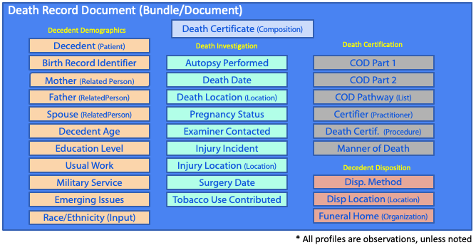
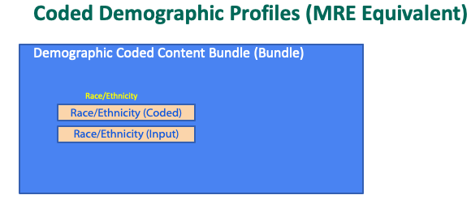
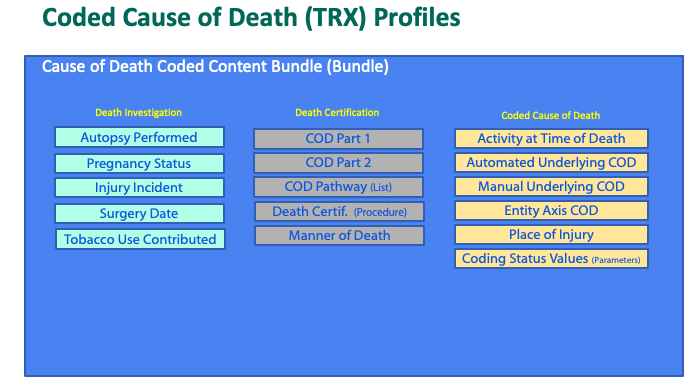
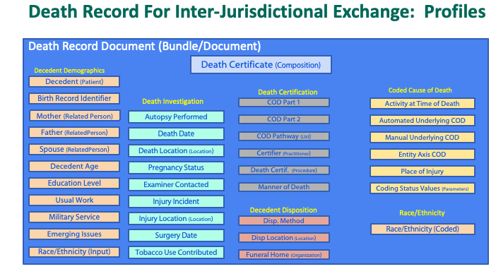
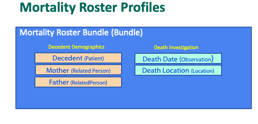

Vital Records Death Reporting (VRDR) FHIR Implementation Guide
3.0.0-preview1 - ci-build

Vital Records Death Reporting (VRDR) FHIR Implementation Guide
3.0.0-preview1 - ci-build

Vital Records Death Reporting (VRDR) FHIR Implementation Guide - Local Development build (v3.0.0-preview1). See the Directory of published versions
The Centers for Disease Control (CDC) National Center for Health Statistics (NCHS) Division of Vital Statistics (DVS) is working closely with Federal, State, and local partners to take a fresh look at how mortality data are gathered, stored, and exchanged across the United States. DVS is focused on adopting best practices for information exchange that lessen the burden on data providers (e.g., vital records offices, medical examiner and coroner offices, toxicology labs) while providing a seamlessly automated data feed to public health and public safety data requestors.
To help make the mortality data ecosystem more connected, adaptable, and robust, they have chosen to leverage modern technologies and approaches, such as RESTful APIs and HL7s Fast Healthcare Interoperability Resources (FHIR) standard.
This implementation guide is an initial step to help define a common set of protocols and practices that developers can rely on to enhance their existing products and build solutions to help make mortality data flow more seamlessly.
The profiles were designed to enable standards-based interoperable exchange in support of four primary use cases:
The profiles defined in this IG along with the mappings to the existing InterJurisdictional Exchange (IJE) format, and associated Transax (TRX), and Mortality (MRE) documentation. The narrative content for each profile shows the mapping of IJE-defined death record content to the fields of the profile. Instances of these profiles are assembled as described below in bundles to support the three use cases. Concept maps are provided for most valuesets defined in this IG (e.g., Tobacco Use that document mapping between the IJE, TRX, and MRE formats and the FHIR valuesets.
Instances of these profiles are assembled as shown below in a DeathCertificateDocument, a profile of a FHIR Bundle of type document. Within that Bundle are contained a DeathCertificate, a profile of a FHIR Composition, along with instances of FHIR profiles that are referenced from the DeathCertificate. The content of the Death Record for submission is illustrated here. The precise content requirements for submission are established by NCHS.
|  |
Coded cause of death content can be transmitted using a CauseOfDeathCodedContentBundle collection bundle, as shown here. Profiles of FHIR Observation are used to convey coded content. Note that the bundle definition includes both coded race and ethnicity data generated by NCHS, as well as the input race and ethnicity data sent by the Jurisdiction to NCHS with the death record submission. The resulting bundle is information-content equivalent with an MRE transaction.
|  |
Coded demographic (Race and Ethnicity) content can be trasmitted using a DemographicCodedContentBundle collection bundle, as shown here. Note that the bundle definition includes both coded cause of death data generated by NCHS, as well as information sent by the Jurisdiction to NCHS with the death record submission. The resulting bundle is information-content equivalent with TRX transaction.
|  |
Coded industry and occupation can be transmitted using a [Coded Industry and Occupation Bundle] containing a single VRDR Decedent Usual Work instance. This bundle is information-content equivalent to the traditional MIO files.
The VRDR IG is intended to support the full information content of the IJE format used for inter-jurisdictional exchange among jurisdictions, including both the information sent by jurisdictions to NCHS, and the coded content generated by NCHS and returned to the jurisdictions, as shown here.
|  |
The VRDR IG is intended to support the full information content of the Mortality Roster format used for inter-jurisdictional exchange among jurisdictions. The content is constructed from a small set of VRDR profiles, within a Mortality Roster bundle, as shown here.
|  |
IG © 2022+ HL7 International / Public Health. Package hl7.fhir.us.vrdr#3.0.0-preview1 based on FHIR 4.0.1. Generated 2024-07-29
Links: Table of Contents |
QA Report
| Version History |
 |
Propose a change
|
Propose a change